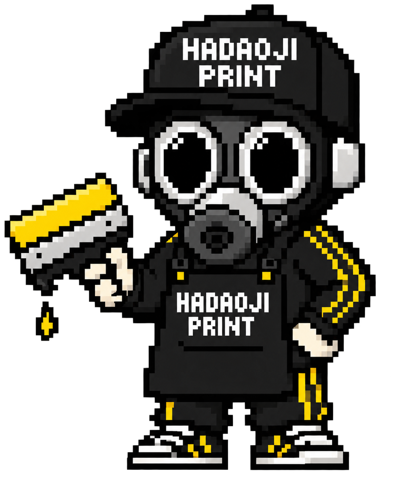
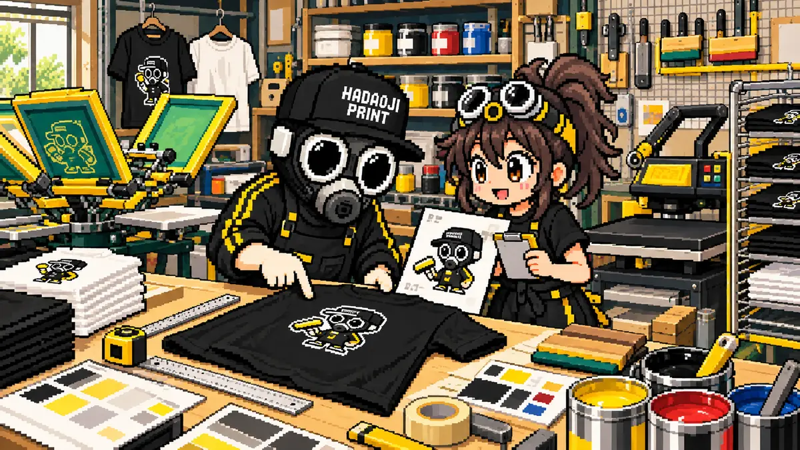
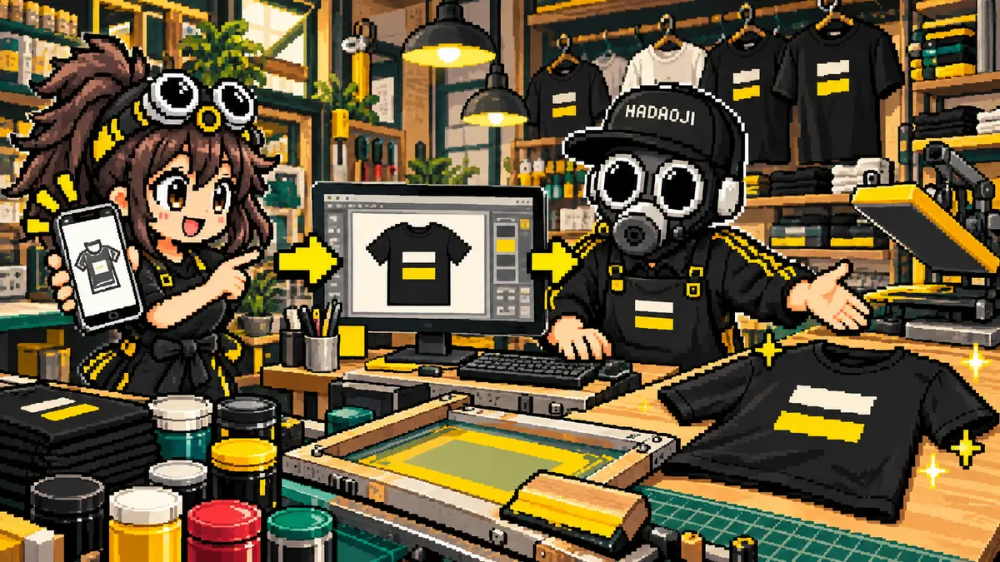

結論：1枚だけでも作れます
オリジナルTシャツは、プリント方法を選べば1枚から制作できます。友だちへのプレゼント、自分用、イベントの試作品、ユニフォームの追加分など、「大量にはいらないけれど1枚だけ欲しい」という注文も珍しくありません。
1枚だけ作るときは、先に「どのプリント方法が安いか」だけで決めるより、デザインの状態を確認することが大切です。スマホ画像、スクリーンショット、手描きラフ、Canvaデータなどは、そのまま使える場合と、修正してから使う場合があります。
現場では、1枚なら製版代のかからないDTFプリントを候補にしつつ、写真のように自然に見せたいのか、ロゴをくっきり見せたいのか、濃色Tシャツに入れるのかで判断します。

1枚なら、版を作らないDTFプリントが候補。画像が粗いときは、プリントサイズを下げる・輪郭を整える・描き直す、の順で見ていくよ。

1枚制作に向いている方法
DTFプリント
専用フィルムに印刷し、熱でウェアへ圧着します。フルカラーや細かい絵柄にも対応しやすく、1枚だけ作りたいときにも選びやすい方法です。
- フルカラー対応
- 濃色TシャツもOK
- 1枚から作りやすい
インクジェット
Tシャツへインクを直接吹き付けます。写真やグラデーションのあるデザインと好相性です。
- 自然な風合い
- 写真表現に強い
- 素材に条件あり
シルクスクリーン
色ごとに版を作ってインクを刷ります。少ない枚数では製版代の割合が大きくなるため、同じデザインを複数枚作るときに向いています。
- 発色が良い
- 耐久性が高い
- 1枚では割高になりやすい
1枚だけ作るときの料金は何で決まる？
1枚だけのオリジナルTシャツは、「Tシャツ本体」「プリント方法」「プリントサイズ」「加工する場所」「デザイン調整」の組み合わせで金額が決まります。たとえば左胸に小さく入れる場合と、背中にA3程度で大きく入れる場合では、同じ1枚でも加工費は変わります。
「まず大体いくらか知りたい」という場合は、使いたい画像と希望のTシャツ色、プリント位置の3つが分かれば概算を出しやすくなります。10cm程度のワンポイントか、A4・A3程度の大きなプリントかでも加工費は変わります。
サイズ別の参考価格は、DTFプリント加工料金とシルクスクリーン加工料金にもまとめています。
※正確な金額は、ウェア・デザイン・希望サイズを確認してからの見積もりになります。
なぜ1枚だけのオリジナルTシャツは割高になる？
1枚でも必要な準備や確認があり、その費用を少ない枚数で受け持つためです。お店に並ぶ量産品と、注文ごとに仕様を決める1着では、作る工程と数量が異なります。Tシャツ本体の値段だけでは、完成品の総額は決まりません。
1枚でも省けない、注文からお届けまでの工程
| 工程 | 確認・作業する内容 |
|---|---|
| 相談・データ確認 | 使う画像、実寸、背景、細い文字、プリント位置を確認します。 |
| ウェアの準備 | 品番・色・サイズ・素材を確認し、必要なウェアを手配します。 |
| プリント制作 | DTFの出力・接着パウダーの処理・熱プレスなど、選んだ方法で加工します。 |
| 仕上がり確認・発送 | 位置と仕上がりを検品し、梱包・発送します。 |
同じデザインをまとめて作ると、一部の準備を共通化できます。少ない枚数ではその効率が得にくく、1枚あたりの加工料金が高くなりやすいのです。送料も、1回の発送費を1枚で受け持つ場合と10枚で分ける場合では、1枚あたりの負担が変わります。
DTFは製版代がかかりませんが、シート出力・加工・検品などの費用は必要です。大きいプリント、前後の2か所、スウェットなどの高いウェア、画像の描き直しが必要な場合は、さらに総額が変わります。各工程をすべて別料金で加算するという意味ではなく、どこまでが見積もりに含まれているかを確認することが大切です。
1枚・2枚・10枚の税込総額はどのくらい違う？
以下は、カラー綿Tシャツ・通常サイズ（本体税別720円）、同じデザインのDTF 10cm×10cm・前面1か所、1回の発送を想定した計算例です。使えるデータが用意され、追加のデザイン調整が不要な場合として、送料税別1,000円・消費税10％で計算しています。
| 数量 | 税別の内訳 | 税込総額・1枚あたり |
|---|---|---|
| 1枚 | 本体720円＋加工2,200円＋送料1,000円 小計3,920円 | 4,312円 1枚あたり4,312円 |
| 2枚 | 本体720円×2＋加工1,200円×2＋送料1,000円 小計4,840円 | 5,324円 1枚あたり2,662円 |
| 10枚 | 本体720円×10＋加工650円×10＋送料1,000円 小計14,700円 | 16,170円 1枚あたり1,617円 |
※2026年10月14日時点の料金表を使った参考例です。全商品がこの価格になるわけではありません。ウェア・サイズ・プリント箇所・データ調整・個別包装・配送条件などで変わります。最終的な送料と税込総額は見積もりでご案内します。
単価が安くなっても、必要以上に作れば総額は増えます。「1枚だけ欲しい」という希望はそのままで大丈夫です。プリントを小さくする、前後を1か所にする、別のウェアを選ぶなど、残したいデザインと目安の予算を伝えてください。変更により見た目や着心地がどう変わるかも確認しましょう。
DTFプリントのメリット・デメリット
DTFは、専用フィルムにデザインを印刷し、接着用パウダーを熱処理してから、熱と圧力でウェアへ転写する方法です。転写後のフィルムは剥がし、デザインのインクと接着層が生地側に残ります。生地へ染み込ませる方式とは、触ったときの質感が異なります。
DTFのメリット：少数・フルカラーを作りやすい
| メリット | どんな注文に役立つ？ |
|---|---|
| 製版代が不要 | 1枚のプレゼント、試作品、別デザインを少しずつ作る場合に向いています。 |
| 写真・多色・グラデーションに対応 | 色ごとの版を作らず、カラフルなイラストなどを表現できます。ハダオジの通常DTF料金はサイズ・枚数・箇所を基準にします。 |
| 白を含むデザインを濃色ウェアへ入れられる | 白インクの下地を使うため、黒いTシャツにもフルカラーデザインを載せられます。 |
| 必要な数から作りやすい | まず1枚を確認してから追加する進め方もできます。追加時の価格・色味・在庫はその都度確認します。 |
DTFのデメリット：質感・面積・素材に注意が必要
| 注意したい点 | 確認方法・調整できること |
|---|---|
| プリント部分に触感が残る | 薄い生地ではプリント部分の厚みや表面の感触が気になる場合があります。生地の柔らかさを優先するなら、見本や他の方法も比較します。 |
| 広いベタ面は着心地が変わる | 塗りつぶす面積が大きいほど、生地の動きや通気感が変わりやすくなります。余白を作る・図柄を小さくする別案を検討できますが、見た目も変わるため事前確認が必要です。 |
| 極細線・小文字・淡い輪郭には限界がある | 画面で見える細部が、そのまま生地で再現できるとは限りません。実寸で線と文字を確認し、背景透過の白い縁や半透明の部分もチェックします。 |
| 素材と熱の相性を確認する必要がある | 熱に弱い素材、撥水加工、段差や縫い目には注意が必要です。濃色ポリエステルは染料がプリントへ移る「再昇華」が起こる場合もあるため、品番と素材を確認します。 |
| 洗濯や乾燥の扱いで状態が変わる | 圧着条件、資材、生地、使用方法で耐久性は変わります。裏返し洗いなど、制作店が案内するケア方法とウェアの洗濯表示を確認し、プリント面への直接アイロンや乾燥機の可否も聞きましょう。 |
| 大量の単色注文では他の方法が有利になることがある | 同じ単色デザインを多数作るなら、シルクスクリーンも総額と質感で比較します。DTFが常に最安になるわけではありません。 |
「DTFなら必ず剥がれる」「シルクなら絶対に傷まない」といった一律の判断はできません。見本、加工条件とケア方法を確認して選びます。
方式の基礎はメーカー資料も参照しています：Roland DG：DTFプリンターの基礎知識／Roland DG：DTFとDTGの比較（英語）。当店での加工可否・仕上がりは、実際のウェアとデータで判断します。
写真やスマホ画像しかなくても大丈夫？
元データがなく、スマホに入っている写真やJPEG画像しかない場合でも、まずはその画像で相談できます。大きくプリントすると粗さが目立つ画像はありますが、希望サイズを小さくしたり、輪郭を整えたりすることで使えることもあります。
プレゼント用の1枚なら、写真をそのまま使うのか、文字を加えるのか、背景を消したいのかまで決めておくと完成イメージを共有しやすくなります。

プリント屋が最初に見るポイント
1枚制作の相談では、画像そのものより先に「どの大きさで、どの位置へ、何色のTシャツに入れたいか」を確認します。同じ画像でも、左胸10cmなら使えるのに、背中30cmでは粗さが目立つことがあります。
難しいデータでも、元画像を探す、背景を消す、線を太くする、ロゴを作り直す、プリント方法をDTFへ変えるなど、現実的な進め方があります。
準備するもの
使いたい画像PNG・JPEG・PDFなど。スマホ画像でも相談可能です。
希望するTシャツ色、サイズ、素材、着用する場面を決めます。
プリント位置左胸、中央、背中など、大まかな希望で大丈夫です。
よくある失敗を防ぐ
特に1枚だけの注文では、「とりあえず作ってみる」より、先に完成サイズと位置を確認したほうが失敗を防げます。Tシャツのサイズによって同じ20cmのプリントでも見え方が変わるためです。
MISSION COMPLETE!
画像1枚から相談できます
画像・枚数・希望のプリントサイズと、予算や着心地で気になる点を送ってください。希望どおりの仕様と、サイズ・箇所・ウェアを調整した別案を検討できます。正式な税込総額と仕上がりの違いを確認してから、ご注文を決められます。
無料見積もりへ ▶裏画像と予算をLINEで相談▶実際のウェアプリント相談・制作経験をもとに内容を確認しています。最終更新：2026年10月14日 運営者・編集方針